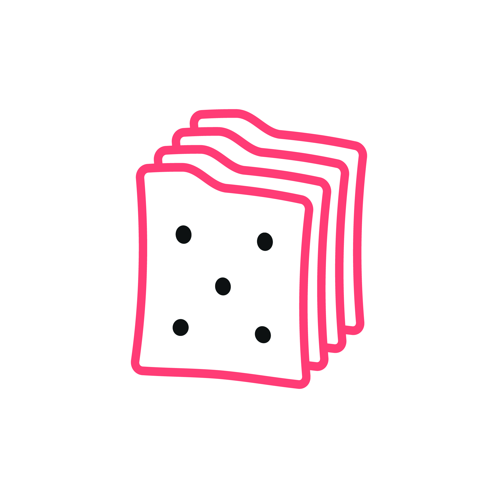
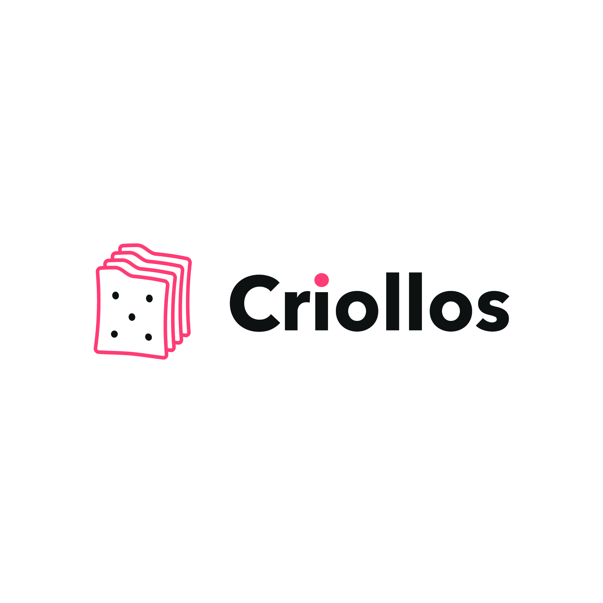
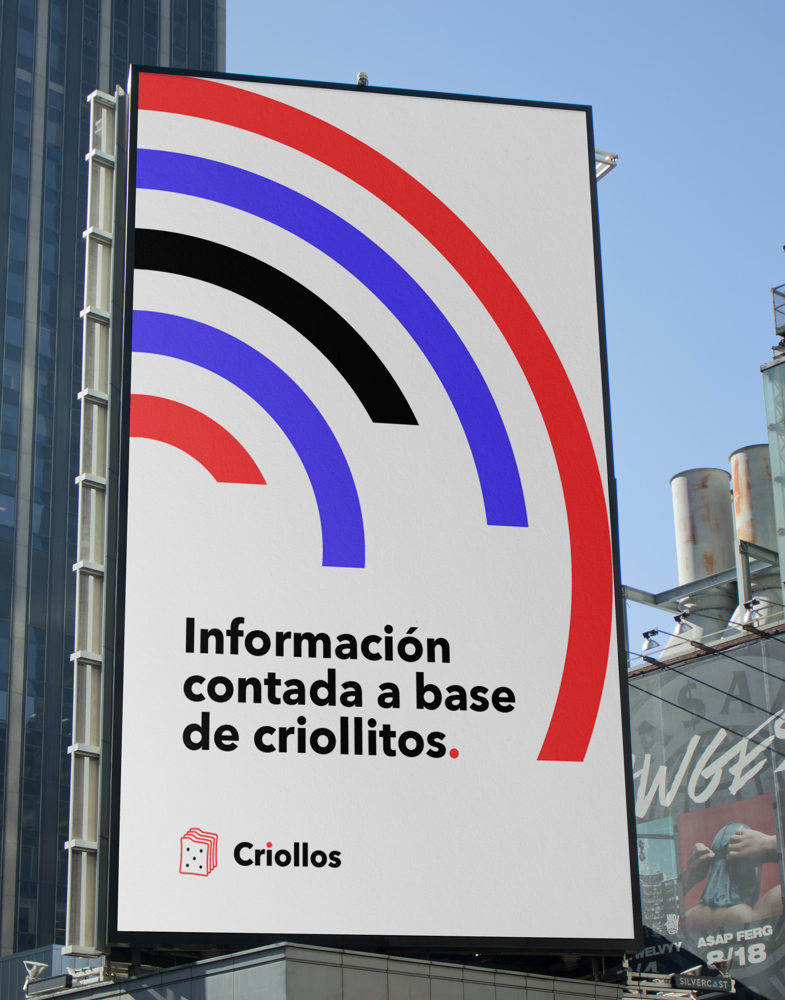
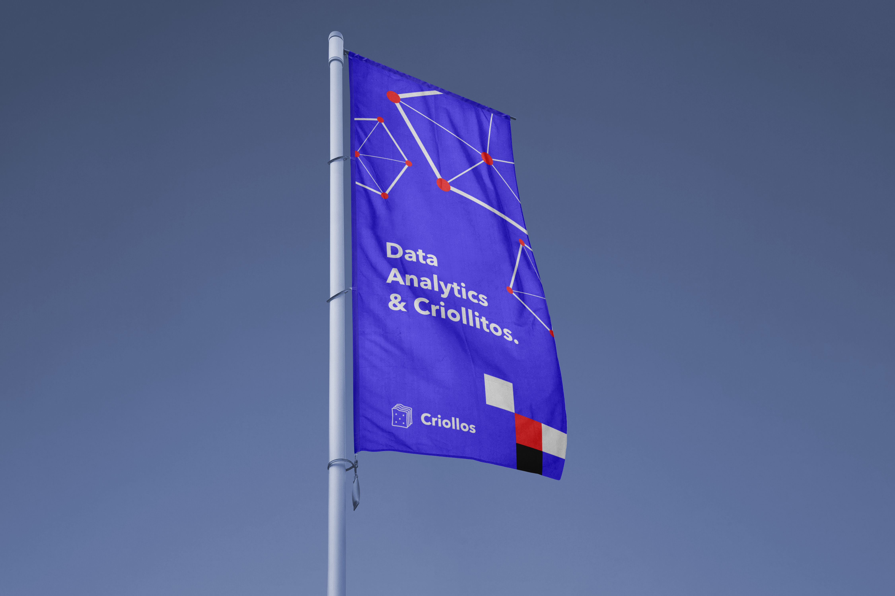
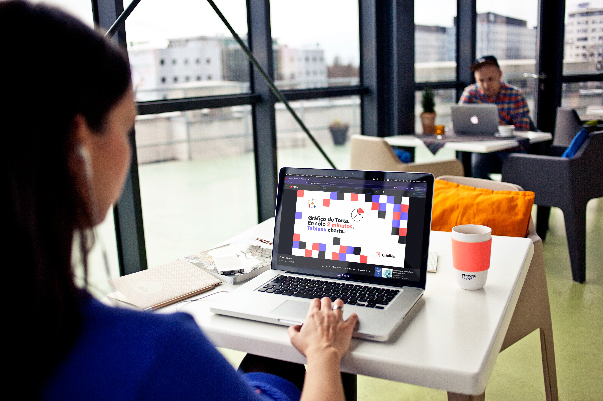

Criollos
Telling the digital world in a simple, concrete way. In an Argentine term, explaining it “en criollo” — with mate and criollitos on the side.

Data analytics, en criollo
From scratch · at pastafro.la
Graphic elements and pieces
Brand kickoff
Data analytics is a dense subject, and almost all the available material is in English or written for people who already know.
Criollos teaches that subject differently: short tutorials, in Spanish, that solve one concrete thing —how to build a pie chart in Tableau in two minutes. The project didn't exist yet, so the brand had to establish that tone before there was any content to show.
They wrote the promise themselves and it served as my brief: “We bring the message and the concepts down to earth to tell you, in a simple way, the information you need so much.”
A criollito that is also a file cabinet.
The icon had to read as a criollito at first glance and, on the second, be understood as stacked file cabinets. The whole project is said right there: technical information and a chat over mate, in the same shape.


The cookie's tab works as a folder tab and the dot of the i takes the red of the stroke. Drawn freehand, so the brand doesn't read as software.
Pantone 178 C
C0 M76 Y55 K0
Pantone 2725 C
Neutral Black C
C0 M0 Y0 K90
Red and violet in equal parts, black for solids and the white of the paper as a fourth color. The graphic elements —concentric arcs, node networks, mosaics— come from there and build entire pieces without needing a photo.
Bold
Geometric and round: it holds the conversational tone and stands up to a headline at poster size.
Medium
Same family, one weight lighter. Nothing competes with the headline.



When the project is explaining something hard, the logo can give the first explanation.
The icon's double meaning saves the introductory paragraph: whoever sees it has already understood what it's about and in what tone it'll be told. Everything else —color, elements, pieces— came from holding that same idea.
Developed at pastafro.la.